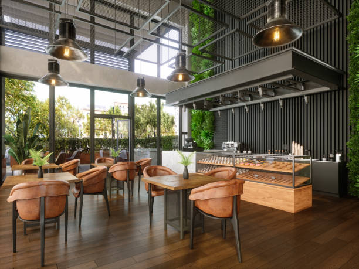
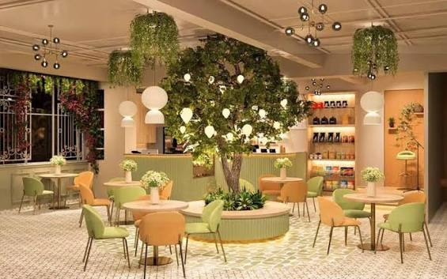
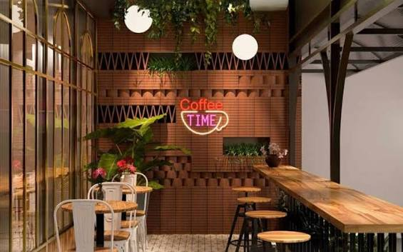
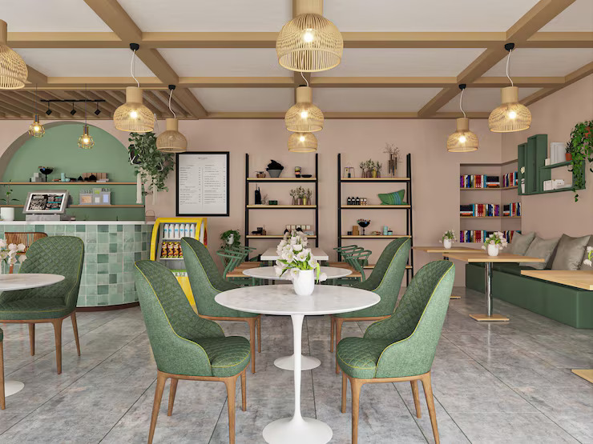
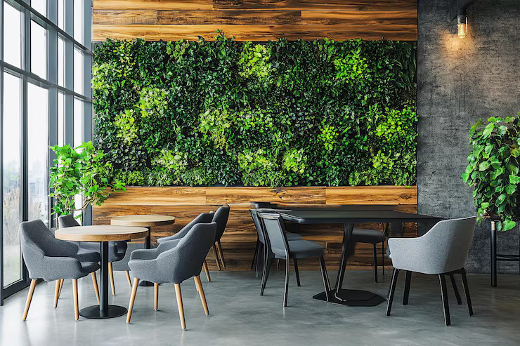
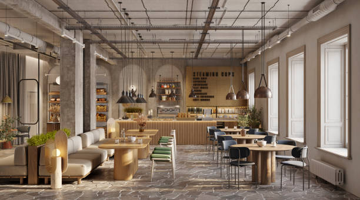

The Roasted Owl
📍 Downtown, Riverside District
Noise: Calm, low hum
Seating: Long communal tables, comfy corners
A sunlit little nook with slow jazz and a manu that leans into single-origin pour-overs. Great for a full day of deep work.
Find you next favorite spot to work, sip and stay awhile.

📍 Downtown, Riverside District
Noise: Calm, low hum
Seating: Long communal tables, comfy corners
A sunlit little nook with slow jazz and a manu that leans into single-origin pour-overs. Great for a full day of deep work.

📍 Garden Quarter
Noise: Lively background chatter
Seating: Window bar seats, small round tables
Plants everywhere, natural light pouring in, and a friendly buzz that's perfect for casual work sessions or catching up on emails.

📍 Old Mill Street
Noise: Quiet, ideal for calls
Seating: Private booths, spacious desks
Built with remote workers in mind - think proper desk chairs, huge tables, and coffee strong enough to outlast your longest meeting.

📍 Elm & 9th
Noise: Very quiet, library-like
Seating: Individual desks, high stools
A no-frills, no-music kind of place. If you need silence to focus, this is where the regulars go to actually get things done.

📍 Maple Row
Noise: Cozy hum, occasional chatter
Seating: Armchairs, low tables, a fireplace corner
Warm lighting and mismatched vintage furniture make this feel more like a friend's living room than a cafe. Great for slower work days.

📍 Harbor View
Noise: Moderate, upbeat playlist
Seating: Bar seating, outdoor patio
A favorite among remote workers and digital nomads passing through — good coffee, faster wifi than most offices, and a view of the harbor.